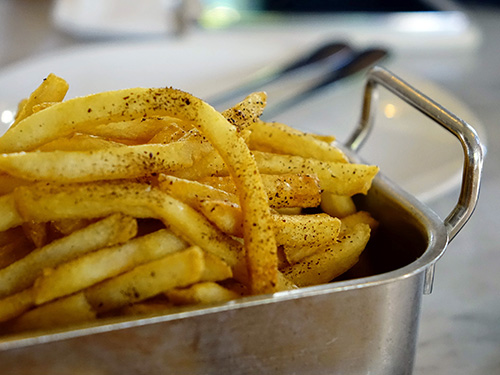

Standard Hours
Breakfast
Mon - Fri7:00 AM - 11:00 AM
Brunch
Sat - Sun9:00 AM - 2:00 PM
Lunch
Mon - Fri11:00 AM - 2:00 PM
Light Lunch
Mon - Sun2:00 PM - 4:30 PM
Dinner
Mon - Thu4:30 PM - 9:00 PM
Fri - Sat4:30 PM - 7:00 PM
Sun4:30 PM - 8:00 PM
Mon - Fri7:00 AM - 11:00 AM
Sat - Sun9:00 AM - 2:00 PM
Mon - Fri11:00 AM - 2:00 PM
Mon - Sun2:00 PM - 4:30 PM
Mon - Thu4:30 PM - 9:00 PM
Fri - Sat4:30 PM - 7:00 PM
Sun4:30 PM - 8:00 PM

Indulge in perfection with our Crispy Homestyle French Fries. Hand-cut from premium potatoes, golden and crunchy on the outside, tender on the inside – a savory symphony of flavor and texture.
Serving Size: 4 ounces (1/2 cup)
amount per servingCalories140
Calories from Fat70
Total Fat1g
Saturated Fat1g
Trans Fat0g
Cholesterol0mg
Sodium330mg
Total Carbohydrates18g
Dietary Fiber2g
Sugars0g
Protein1g
* Nutrition information is provided by our vendors. Please contact the on-site manager with any questions.
Best fries I've ever tasted! Try them with the fry sauce! You won't be able to get enough!
Really like these fries! I can see why ASU is #1 in the country for innovation. They are the most innovative fries I've ever had. I rated 4 stars because they are always running out and I can't get them sometimes.
Great fries! Always seasoned just right and they are just the right amount of crispiness. Not like fast-food fries which are always crispy on the outside, but mushy inside. These never get mushy!